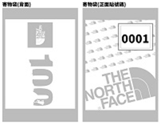

2018 The North Face 100® 國際越野挑戰賽
桃園站競賽規程
一、指導單位：桃園市政府體育局
二、主辦單位：台灣威富品牌有限公司、中華民國文化休閒運動協會
三、協辦單位：中華民國路跑協會、大港國際股份有限公司
四、競賽日期：2018年4月21日（星期六）
五、競賽地點：主會場-石門水庫南苑停車場；賽道-鄰近山區步道(石門山步道等)
六、競賽項目：
| 比賽項目 |
山林險境考驗組
50KM |
激進鍛鍊組
20KM |
登峰實戰組
10KM |
休閒體驗組
5KM |
|
| 人數限制 | 300人 | 1,375人 | 1,100人 | 2,000人 | |
| 費用 | 報名費 | NT$2,200 | NT$1,600 | NT$1,200 | NT$800 |
| 晶片保證金 | NT$100 | X | |||
| 合計 | NT$2,300 | NT$1,700 | NT$1,300 | NT$800 | |
| 報名日期 |
1月27日09:00至
3月31日17:00止， 如遇名額已滿， 亦不再接受報名 |
2月1日09:00至3月31日17:00止，
如遇名額已滿，亦不再接受報名 |
|||
| 報名方式 | 線上報名+10人紙本報名 | ||||
| 集合時間 | 04:00 | 05:30 | 06:30 | 07:00 | |
| 起跑時間 | 04:30 | 06:00 | 07:00 | 07:30 | |
| 關門時間 | 15:30 | 11:00 | 10:00 | 09:00 | |
| 比賽限時 | 11小時 | 5小時 | 3小時 | 1.5小時 | |
| 主會場地點(起終點) | 石門水庫南苑停車場 | ||||
| 比賽限時 | 隨身照明燈 | O | / | / | / |
| 號碼布 | O | O | O | O | |
| 賽服 | O | O | O | O | |
| 完賽好禮 | 完賽服 | O | O | O | O |
| 完賽獎牌 | O | O | O | O | |
| 完賽毛巾 | O | O | O | O | |
| 電子成績證明 | O | O | O | / | |
七、賽服(T恤)尺寸對照表 (分項目共三款，50KM ; 20KM ; 10KM 完賽服尺寸相同)
| 尺寸 | XS | S | M | L | XL |
| 胸圍 | 89cm | 97cm | 104cm | 112cm | 112cm |
| 衣長 | 65cm | 67cm | 69cm | 71cm | 73cm |
備註 : 賽服T恤因尺寸數量有限，如在足夠數量的情況下，可接受更換尺寸之需求，但由於報名同時進行中，恕不保證一定能換到期望之尺寸，如該尺寸無足夠數量，僅以原報名時所登記為準。如有更換尺寸需求最晚請於3/5 17:00前來電02-25855659提出。無法如遇尺寸短缺時，大會有權以其他尺寸代替。網路報名時，請依尺寸選擇參賽項目。
八、路線說明 : (可能因為地形高低因素而造成距離誤差)
各項目起.終點皆為南苑停車場
1.山林險境考驗組(50KM) https://ridewithgps.com/trips/21866458
50KM CP關門點 :
CP1 - 羅馬公路33.5K登山口(賽道15.4公里處) - 限時5.5小時
CP2 - 關西竹28鄉道約5.5K處 (賽道23.7公里處) - 限時7.5小時
CP3 - 石門勝景登山口(賽道34公里處) - 限時9小時
*補給補水各站說明 :
1. 石門山南端入口(往關西無極勝義宮方向)(賽道6公里處)
2. 小竹坑接大竹坑古道處(約8.8公里處)
3. 羅馬公路33.5K登山口(賽道15.4公里處)
4. 關西竹28鄉道約5.5K處(賽道23.7公里處)
5. 小竹坑右轉大竹坑古道處(賽道31.8公里處)
6. 石門勝景登山口(賽道34公里處)
7. 賽道42.4公里處
2.激進鍛鍊組(20KM) https://ridewithgps.com/trips/21941902
20KM CP關門點 :
CP1 - 小竹坑右轉大竹坑古道處(約8.8公里處) -限時2.5小時
*補給補水各站說明 :
1. 石門山南端入口(往關西無極勝義宮方向)(賽道6公里處)
2. 小竹坑接大竹坑古道處賽道8.8公里處
3. 石門勝景登山口(賽道17.5公里處)
3.登峰實戰組(10KM) https://ridewithgps.com/trips/21941890
*補給補水各站說明 :
1. 石門山南端入口(往關西無極勝義宮方向)(賽道6公里處)
2. 石門勝景登山口(賽道8.3公里處)
4.休閒體驗組(5KM) https://goo.gl/maps/CJUm8yfrBZA2
*補給補水各站說明 :
1. 石門勝景登山口(賽道2.3公里處))
*注意事項：因越野賽賽道，受不可抗拒之天然氣候因素甚大，賽道路線GPS檔案僅供參考，請所有參賽選手務必以賽事當日之大會標示佈置、大會指示牌及大會工作人員指引為依據！
九、報名資格 :
*山林險境考驗組50KM報名選手，須符合以下全部條件：
-
參賽年齡限制為2000年以前出生者
-
參賽經歷證明，選手須檢附其一成績證明：
(1) The North Face 100極限跑挑戰賽30公里項目成績證明影本，或其他越野賽事30公里項目成績影本。 (曾經參與The North Face 100賽事者優先錄取)。
(2) 2016~2018年至少二次全程馬拉松賽於5小時內完賽成績證明影本。 -
建議選手於賽事日前進行健康檢查，掌握自身身體狀況!
*激進鍛鍊組20KM參賽年齡限制為2000年以前出生者。
*登峰實戰組10KM參賽年齡限制為2000年以前出生者。
*休閒體驗組5KM參賽年齡限制為2000年以前出生者，若身心健康對路跑有興趣之兒童（未成年人，2000年以後出生者）
於比賽當日有18歲以上(2000年以前出生者)參賽選手陪同，亦可報名參加 !
十、報名辦法 : (報名日期:2018年02月01日09:00至2018年3月31日17:00止)
*注意事項：因越野賽賽道，受不可抗拒之天然氣候因素甚大，賽道路線GPS檔案僅供參考，請所有參賽選手務必以賽事當日之大會標示佈置、大會指示牌及大會工作人員指引為依據！
-
採線上個人報名制及10人以上紙本報名，請上http://www.sportsnet.org.tw 線上報名專區填妥比賽報名表後進行繳費。請於報名額滿
● 線上刷卡：
使用MASTER、VISA、JCB，不限金額，不限持卡人，輸入信用卡卡號進行線上刷卡付費。請勿重覆點選付費確認鈕。繳費結束後頁面將提供完成繳費之資訊，如未能成功看到繳費頁面，請致電信用卡公司查詢信用卡授權狀況。（相關行政費用由參賽者自行負擔）
● 超商繳費：
(每筆訂單金額限於2萬元內，如超過2萬元請分次報名，另需自付每筆繳費單18元手續費) 線上報名網站登錄，完成資料填寫後，選擇超商繳費 (需自付兩萬元以下每筆18元手續費)，並於隔日下午14:00前 至超商列印繳費單繳交報名費，敬請把握繳費時間，完成繳費後請妥善保留繳費單據。未依照規定時間內繳交報名費 者視同未報名成功,如有名額的情況下請重新再上線報名。如人數額滿將不開放報名。
● 郵寄報名 (限10人以上紙本報名)：
1.報名表
2.報名費(如物資領取方式勾選宅配領取，費用需一併附上)
3.參賽經歷證明，選手須檢附其一成績證明資料(如報名資格說明)以掛號方式郵寄至103台北郵政47-110號信箱並署名由「2018 The North Face 100 國際越野挑戰賽-桃園站報名小組」收。請保留掛號單據，可至中華郵政官網-郵件查詢頁面，以單號查詢是否已收到郵件。符合資格且在名額內成功報名者，可於報名截止後兩週內至中華民國路跑協會網站-報名查詢頁面查詢參賽資料。如未符合資格或名額額滿的情況，將於報名費中扣除退件所產生之費用(匯票手續費$30+郵寄掛號費$25=$55)後退回原住址。● 親自報名 (限10人以上紙本報名)：
欲親自報名之選手請前往以下地點報名繳交報名表及報名費用及成績證明影本(成績證明審核資格如報名資格說明)
中華民國路跑協會：台北市大同區昌吉街55號2樓206室 蘭州市場二樓，大龍街側進入
電話：+886-2-25855659 傳真：+886-2-25996716
上班時間 星期一至星期五 08：30~12：00及13：30～17：30 -
報名時請依實際參賽人身分證字號(外籍人士則以護照號碼)之有效證件(身分證或護照)上個資為依據進行報名，請詳加評 估自身實力，報名手續完成者，不得以任何理由要求更換人名、參賽項目，亦不得轉讓參賽資格，代跑或轉讓者，如有意外發生應負連帶保險理賠及法律責任。無完成報名者將不具參賽資格，嚴禁陪跑。如報名時所填寫之個資與身分證(外籍人士則以護照)上個資不符時，皆以身分證(外籍人士則以護照)上個資為準。
-
若網路報名，繳費完成後，系統將自動發送報名成功email給參賽選手，如未收到email亦可至路跑協會網站「報名查詢」區確認報名成功資料。
-
為鼓勵社會大眾參與活動，若召集10人(或以上)一起參加活動，可於開放報名時下載團體報名表進行團報。只要參與團報，不分組別，每人都可享有報名費95折優惠。 95折之報名費：5K─760元、10K─1,140元、20K─1,520元、50K─2,090元。
-
已完成報名繳費者，如因故要取消報名，請於 3/20 17:00 前於本會上班時間（週一至週五，上午08:30至12:00；下午13:30至17:30）來電 02-25855659 提出申請並於 3/20 17:00 前提交退費申請書。退回金額為原繳交報名費總額之 80% (如退款方式選擇匯款，每筆退款將再扣除 $30 匯款手續費)。如逾時申請則無論任何理由將不再受理退費事宜。
附註：本次活動因名額有限，請於報名額滿前完成報名，報名截止日前如遇名額已滿，報名截止日將以額滿日為準，恕不再接受報名。請填寫完報名資料後依規定期限前完成繳費，以免因未繳費錯失參賽機會。
十一、參賽物品領取方式：( 報名成功後賽前領取號碼布、晶片及賽服）
● 親自領取：
時間：2018年4月19日 (星期四)11:00~22:00；4月20日(星期五)上午11:00~22:00，逾時不候
地點：The North Face 台北忠孝旗艦店-台北市大安區忠孝東路四段226號
1.報名回執單電子檔將統一於活動前一星期寄發e-mail，請持本會e-mail寄發的賽前報名回執單以領取參賽物品。
2.領取時領取者需出示領取者之證件並簽收回執單副本。本人無法親自領取者，可委託他人代理，受託者亦需出示證件以備查驗，如有被冒領，本會一概不負責。
3.於參賽物品領取日前尚未收到電子回執單者，請至中華民國路跑協會網站，「報名查詢」區下載回執單以利領取時使用，或憑 參賽者身分證明文件，於領取期限內逕自領取地點查詢並辦理領取作業。
● 親自領取：
如無法在上述親自領取時間領取，請選擇宅配領取）請在報名同時勾選，繳交宅配領取費用，以方便作業， 限臺灣境內。
1.凡宅配領取者，本會將由物流公司於4月15日統一將參賽袋（號碼布、晶片及賽服）配送到聯絡地址。請務必填寫正 確的郵寄地址，如報名後需修改配送地址，請務必與本會聯繫，以免包裹無法寄達。
2.請於配送期間注意包裹配送情況，如於4月19日(星期四)前仍未收到包裹，於4月19日至20日(星期四、五)上班期間主動來 02-25855659 查詢；如包裹送達而無人接收導致無法參賽者，本會將不再另行補寄，報名禮請於賽後一星期內4/23~4/27上班時間（08:30~12:00；13:30~17:30）至本會領取，逾期視同放棄，大會將不予保留! 完賽禮恕不接受補領。
3.宅配領取費用每人新台幣100元請於報名同時繳交。
4.收到宅配包裹代表已完成領取參賽物品手續，請於活動當天4月21日逕自前往活動會場集合即可。
5.活動當日恕不開放現場報到!
*未完成領取參賽物品者，將自動喪失比賽資格，不得進入比賽路線，裁判有權終止無號碼布選手進行比賽。
*因故無法領取亦無參加比賽者，請於賽後4/23(一)~4/27(五)上班時間至路跑協會補領報名禮(不含當天發放之完賽禮)，逾時視為放棄領取，大會將不予保留。
*賽事道路僅開放報名參賽者路跑，敬請非報名者勿前往，以免影響付費跑者的權益。
十二、考量會場停車空間有限，建議參賽民眾儘量搭乘選手接駁專車，每人酌收往返交通費，採事先登記付費當天以憑證上車， 回程不搭車亦不退費。
1.台北市-中正紀念堂 (杭州南路-信義路口) 發車，車資NT$400元
去程發車時間 : 早上02:30、04:00~04:30 ; 由會場返回台北發車時間：中午12:30、13:00、13:30、14:00、14:30
2.大會免費接駁公車：
| 搭乘位置 | 發車時間 | 備註 | |
| 去程 |
桃園市搭乘處
|
03:00~03:30 04:30~05:30 06:00~07:00 08:00~09:00 | 選手憑號碼布優先上車 坐滿才發車 |
| 回程 |
會場搭車處(南苑生態公園)>前往
|
10:30~14:00 | 坐滿才發車 |
備註：活動會場周邊停車不易，敬請多加利用大會接駁公車
十三、獎勵方式及辦法：
| 山林險境考驗組 50KM | |||
| 50K總冠軍/不分男女取1名 | |||
| 組別 | 冠軍 | 亞軍 | 季軍 |
| 男子組 |
TNF 商品抵用券
價值$50,000 |
TNF 商品抵用券
價值$40,000 |
TNF 商品抵用券
價值$30,000 |
| 女子組 |
TNF 商品抵用券
價值$50,000 |
TNF 商品抵用券
價值$40,000 |
TNF 商品抵用券
價值$30,000 |
| 激進鍛鍊組 20KM | |||
| 組別 | 冠軍 | 亞軍 | 季軍 |
| 男子組 |
TNF 商品抵用券
價值$10,000 |
TNF 商品抵用券
價值$8,000 |
TNF 商品抵用券
價值$6,000 |
| 女子組 |
TNF 商品抵用券
價值$10,000 |
TNF 商品抵用券
價值$8,000 |
TNF 商品抵用券
價值$6,000 |
| 激進鍛鍊組 10KM | |||
| 組別 | 冠軍 | 亞軍 | 季軍 |
| 男子組 |
TNF 商品抵用券
價值$8,000 |
TNF 商品抵用券
價值$5,000 |
TNF 商品抵用券
價值$3,000 |
| 女子組 |
TNF 商品抵用券
價值$8,000 |
TNF 商品抵用券
價值$5,000 |
TNF 商品抵用券
價值$3,000 |
備註：優勝者必須著 The North Face 100®服飾上台領獎
5KM組以體驗為主，不計算成績，提供摸彩機會
現場也將安排多項摸彩好禮。摸彩券請於活動當日摸彩前投入摸彩箱，現場將陸續抽出獎項並公布於抽獎佈告欄， 大會考量各項完賽時間不同，請於15:00前由本人完成領取，逾時視同放棄，獎品金額在NT$1,000元(含)以上之得獎者，領取獎品時請出示身分證或駕照等證件，否則視同棄權。現場摸彩獎品將依中華民國稅法規定扣抵所得稅。
十四、晶片及成績查詢：
「The North Face 100 國際越野挑戰賽-桃園站」除5K組外將提供競賽選手晶片計時服務，選手在報名時已預繳新台幣100元作為晶片保證金。每一位報名參加並完成報到手續之競賽參賽者，將派發2枚計時晶片，選手於參賽物品領取期間應領取號碼布、賽衣及晶片(50K跑者多一枚照明燈)，此晶片保證金將於比賽會場選手至晶片退費處蓋退費章後即可領回，賽事當天未能至雞片退費處進行退費程序者，請於賽後一個星期內至中華民國路跑協會退回，逾期者，保證金恕不退還。晶片使用之操作方式請選手於賽前詳閱秩序冊晶片使用說明，或是依現場服務人員的協助操作。競賽公佈成績一律以大會公佈成績為準。
依據國際田徑規則165.24條規定，選手起跑時間為鳴槍時間。大會將依據鳴槍開跑時間開始計算時間記錄,並依據此時間記錄做為選手成績統計之判定。
號碼布及晶片請配戴於大會指定之位置，若未依大會規定配戴，導致晶片感應不良，主辦單位恕不提供完跑證明。
參賽成績：你將可以透過 : https://www.livetrail.net/ 查詢個人成績，將不另寄紙本成績證明。非限時內完賽或缺任一晶片感應時間之參賽者恕不提供完跑成績。
十五、違規罰則：
主辦單位將對起點、全程路線和終點進行監控！
-
違反下列規定者，取消比賽成績。
(1) 以任何形式投機取巧，偽真實跑完全程者。
(2) 關門時間到卻繼續比賽者。
(3) 無本次活動號碼布及比賽專用計時晶片。不依規定將晶片黏貼於號碼布上者。
(4) 晶片計時無紀錄起跑時間，終點時間及任一檢測站時間之選手。
(5) 不遵從裁判引導者。
(6) 未將號碼布別在胸前。
(7) 本次活動使用晶片計時，請依規定將晶片黏貼於號碼布上，嚴禁使用金屬性物品繫綁，無任一檢查站時間之選手 將被取消資格，不予計時，不發給成績證明。 -
違反下列規定者，取消比賽成績並禁止參加本會舉辦之活動一年
(1) 比賽進行中選手借助他人之幫助而獲利者(如乘車、扶持……等)。
(2) 報名組別與身分證明資格不符者。
(3) 違反運動精神和道德者(如打架、辱罵裁判及大會工作人員……)。
(4) 嚴禁未報名者取代報名者參加比賽；亦禁止佩帶2組或以上之晶片，違反規定者，一經查明屬實，由裁判宣佈取消比賽資格，不予計時，另禁賽1年及網路上公佈代路者與被代跑者姓名。
十六、50KM.20KM參賽選手裝備要求：
-
由於賽事路程長、難度高，參賽選手必須自行穿著適合的運動服裝和跑鞋。為選手安全考慮，禁止參賽選手不穿跑鞋 (如赤腳、穿托鞋..等等)參加比賽，如經發現，立即取消比賽資格。
-
由於賽事路程長、山路多、為了選手的安全考慮，主辦單位要求每位50KM參賽選手除了贈品的隨身照明燈之外，必須自備頭燈1個，以備不時之需。
-
主辦單位在補給站為參賽選手提供必要的補給和醫護物品。此外，參賽選手須自行攜帶自己專屬的個人裝備，如下：
(1) 自備水袋背包
(2) 替換衣物：如T恤、運動褲(山徑植被較高，建議穿著長褲或壓縮褲)、運動鞋、雨衣、手套、帽子等。
(3) 補充食物：能量棒及易於攜帶的食品等；(比賽過程不允許陪跑員及補給員進行協助，必須自行攜帶補給用品。)
(4) 飲料：平常時常用的飲品
(5) 急救物品：解酸劑、阿司匹林、唇膏、治療水泡用品、止痛劑、毛巾、眼藥水、抗生素藥膏、繃帶、Ok蹦。
(6) 優勝者必須著The North Face 100活動紀念衫上台進行領獎動作，若無穿著指定紀念衫將取消得獎資格。
注意事項：比賽過程不允許陪跑員及補給員進行協助，必須自行攜帶補給用品！
50K於起跑前須完成裝備檢查！經大會檢查合格會給予記號標示。 -
50K強制裝備清單
(1) 頭燈及配備兩套電池
(2) 手機、電源線和行動電源
(3) 號碼布(需填寫緊急聯絡人電話)
(4) 兩片計時晶片(一片已黏貼在號碼布背面，另一片懸掛在背包外部明顯的位置)
(5) 水壺或水袋(容量500c.c以上)
(6) 簡易醫療物品(例：藥膏、繃帶、OK繃…)
※ 50K參賽選手可於03:15~04:10於選手檢錄區進行檢查，完成檢查始得參賽。
十七、注意事項：（請詳閱本注意事項）
-
衣物保管：各組寄.領物時間一覽表
項目 寄物時間 領取時間  山林險境考驗組50KM 03:15~04:20 08:00~15:00 激進鍛鍊組20KM 05:00~05:50 08:00~11:30 登峰實戰組10KM 06:00~06:50 08:00~10:30 休閒體驗組5KM 07:00~07:50 08:00~09:30 (1) 衣保袋將於親自領取報到時發放，郵寄報到者則於活動當日於寄放時間內至衣保處憑號碼布向工作人員領取。選手若需衣物保管，必須使用本賽事指定保管袋（圖示如右）才接受衣物保管。本次活動將另印製衣保專用貼，工作人員將於各組別衣保區將衣保專用貼依寄物順序黏貼於衣保袋前口袋，領回所寄放之衣物也必須出示號碼貼下緣之衣保袋衣物領取聯，經工作人員蓋領回章後才可領回所託管衣物保管袋。
(2) 貴重物品請自行保管，若有遺失，本會恕不負責，寄物之選手敬請盡早完成寄物，以免延誤出發時間。衣物保管袋遺失最高賠償金額新台幣1,000元整。 -
安全第一，大會裁判或醫師有權視選手體能狀況，中止選手繼續比賽資格，選手不得有異議。
隨身攜帶身份證明備查。
代跑者及被代跑者一經查明屬實，由裁判長宣佈成績無效外，另禁賽一年及網路上公佈代跑者與被代跑者姓名。
本次賽會一律使用晶片，請詳閱晶片使用說明，如因個人操作不當造成無成績者，本會一概不負責。
參賽物品領取完成後，請妥善保管號碼布及晶片，遺失恕不再補發。無號碼布者將喪失參賽資格。
本人或本團體亦同意主辦或被主辦單位授權之單位得使用本賽事的錄影、相片、姓名、號碼布號碼及成績於本會及相關 網站上於世界各地播放或展出與販售；本人或本團體亦同意主辦或被主辦單位授權之單位得蒐集、處理及利用本人/ 本團體所提供之個人資料，及寄送相關路跑/商品優惠活動訊息或使用本人或本團體肖像及成績於宣傳活動上。
比賽前如遇颱風等人力不可抗力之天災，由大會以選手安全為考量，有權決定是否取消或擇期比賽或改用其他替代路線 或調整路線長短，參賽選手不得有議；若因故取消活動，報名費將以5折退還。
代跑或轉讓者，如有意外發生恐無法獲得保險保障並應負相關連帶法律責任。本規程如有未盡之事宜，得由大會修正公佈之。